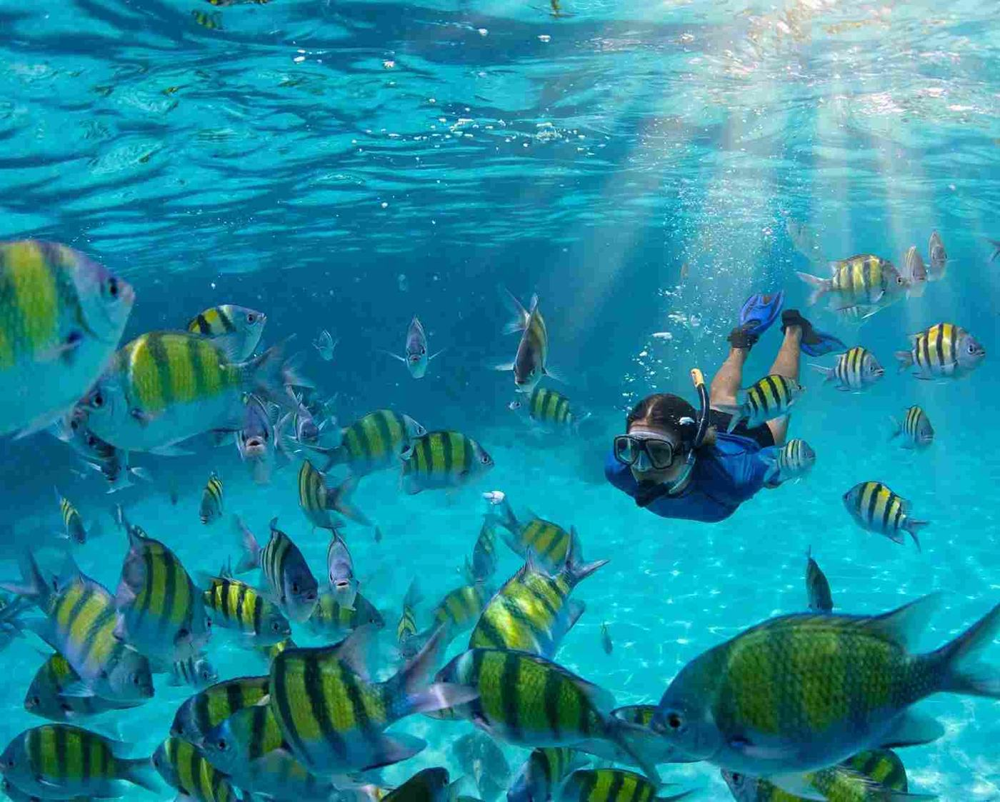

A standard Mactan island-hopping day takes you by outrigger boat to two or three small islands east of Lapu-Lapu City: usually the Hilutungan marine sanctuary for snorkelling, Nalusuan for its boardwalk over the reef, and Caohagan for a walk through a fishing village. You pay for the boat, then pay small entrance fees in cash at each island. Done right, it is one of the easiest sea days anywhere in the country, with clear water barely half an hour from the airport.
The part that goes wrong is the money. In April 2026 a visitor posted a video after spending close to ₱15,000 on a day in Barangay Mactan that started with a ₱5,500 island-hopping quote. Extra charges kept appearing along the way: a fee for the islands, ₱1,200 for two short jeepney rides, ₱1,500 for sea urchins and oysters he never meant to order. City tourism officials traced the trouble to "canvassers", middlemen who sit between tourists and the boatmen and add their own markup, and they have since promised standard prices for island hopping and entrance fees.
The good news is that a fair, stress-free day is easy to arrange once you know the going rates. This guide covers what a typical day costs, who to book with, and a few simple questions that keep the price you agreed on the price you pay.

The islands on a typical route
Hilutungan (Gilutongan) Marine Sanctuary
Almost every boat stops here first. The sanctuary is a protected patch of reef where boats anchor at the reef edge and you drop straight into water full of fish. It sits under the town of Cordova, Cebu's most-visited town this year, not Lapu-Lapu, which is why its fee is collected separately. Life vests are normally required, so even weak swimmers can float above the coral.
Nalusuan Island
A tiny island with a long wooden walkway stretching over the shallows. Many boats use it as the lunch stop. The snorkelling is good near the walkway, and it is the easiest place in the day to sit in the shade for an hour.
Caohagan Island
Caohagan is lived on, not built for tourists. You walk past houses, small stores and boats on the sand, and at low tide a market of seafood and shells sets up near the shore. This is also where you are most likely to be offered sea urchins, oysters and grilled fish, so ask the price before anyone starts cracking shells.
Pandanon, Sulpa and Olango
Pandanon has a wide white sandbar but belongs to Bohol and sits farther out, so expect a fuel surcharge on top of the usual boat rate. Sulpa is a small island some boats add when the tide rules out another stop. Olango, the large island to the east, has a wildlife sanctuary famous for migratory shorebirds in the cooler months. It works better as its own half-day trip than as a quick extra on a snorkelling route.
What a fair island-hopping day costs
Prices move with the season, the size of the boat and fuel costs, so treat these figures as a starting point for bargaining rather than a fixed rate card.
Private boat hire: for a group of about five to ten, a whole boat for the day commonly runs between ₱2,500 and ₱5,000. Bigger groups need bigger boats, and Pandanon adds fuel.
Joiner tours: sharing a boat with strangers usually costs somewhere around ₱800 to ₱2,500 per person, depending on what is bundled in. Lunch and snorkel gear are where packages differ most.
Island entrance fees: each stop collects its own fee, usually somewhere between ₱150 and ₱300 a head, in cash at the landing. Some private tours fold these in; with a plain boat rental you pay them yourself at each stop.
Lapu-Lapu City environmental fee: the city charges ₱100 to foreign visitors joining water activities such as island hopping, diving, jet skiing and parasailing. Filipino tourists riding with accredited Lapu-Lapu boatmen pay ₱20 under an amendment the City Council passed in 2025. City residents with an ID showing a Lapu-Lapu address and Filipino children 12 and under are exempt, and Filipino seniors and persons with disability get 20% off. The City Treasurer's Office collects it at booths in Angasil, Maribago, Punta Engaño and Marigondon, so ask for the official receipt.
Add your lunch, a tip for the crew, and any rentals such as a GoPro or a better mask. A group splitting a private boat often pays less per head than a couple on a joiner tour, which is worth knowing if you are travelling with family.
Getting a fair price every time
Canvassers wait along the roads near the beaches and wharves, at hotel gates and sometimes inside resorts. Many are friendly and quick to help, and that is the hook. Their quote looks reasonable because it leaves things out. Then, once you are on the water or already far from the road, come the island fees they never mentioned, a "guide fee", the ride back to your hotel, and seafood you thought was a free taste.
A few habits cut most of this off:
- Get one all-in price for the boat, in writing or as a chat message, before you leave the shore.
- Ask which islands are included, how long you stay at each, and what time you come back.
- Ask directly whether island entrance fees and the city environmental fee are in the price.
- Agree on the price of any food or seafood before it is prepared. "Taste" is not a price.
- Pay part as a deposit and the balance when you are back on land.
- Keep the boat's name and the boatman's number in case something goes wrong.
After the April case, the city tourism office advised visitors to book through accredited guides, barangay officials or the Tourist Police. If someone offers a deal on the street, it is fair to ask whether they are accredited and to see the boat before you hand over money. If you are overcharged anyway, the Tourist Police and the City Tourism Office are the people to report it to.
When to go
March to May brings the calmest water and the best visibility, along with the biggest crowds, especially around Holy Week. December to February is a good middle ground, with steady weather on most days and fewer boats at the sanctuary.
From roughly August to November the risk of storms rises. When a storm signal goes up, the Coast Guard stops small boats from sailing, and operators cancel trips on short notice. If you are visiting in these months, keep a spare day in your plans and avoid paying the full amount far in advance. Our month-by-month look at Cebu's weather helps you pick the right week.
Whatever the season, leave early. Boats heading out at around 8 a.m. reach Hilutungan before the crowd and the afternoon wind, and the tide schedule decides which islands are easy to reach that day, so let the boatman plan the order.
What to bring and how to behave on the reef
- Cash in small bills for fees, food and tips. Card machines are rare on the islands.
- A rash guard and mineral sunscreen. Chemical sunscreen harms coral, and some sanctuaries ask you to skip it.
- Water shoes for the rocky and urchin-dotted shallows, plus a dry bag for your phone.
- Your own mask if you have one. Rental masks fit poorly and fog quickly.
- Water and a hat. There is little shade on the boat between stops.
In the water, keep your hands and fins off the coral, keep a respectful distance from any turtle, and skip feeding the fish even if the boat crew hands you bread. Feeding draws in big crowds of fish for photos, but it changes how they behave and damages the reef over time. Leave shells and sand where they are.
Booking options, compared
Direct at a wharf: going straight to the boats at Maribago or Marigondon gets you the lowest price, but you need to bargain and confirm every detail yourself. Best for groups who are comfortable with that.
Through your resort: easiest, usually with hotel pickup, but it costs more because the resort takes a cut. A good choice if your time is short.
Online booking platforms: the price is fixed and the inclusions are listed before you pay, which takes away most of the haggling. You give up some flexibility on the route and timing.
Whichever you choose, the idea is the same: know the full price, know what it covers, and pay the last part after the boat brings you back. On your way out of Lapu-Lapu, shops selling dried mango and otap are easy to find, and our Cebu pasalubong guide covers what is worth packing if you still have room in your bag.

Comments
No comments yet. Been here recently? Share a tip or ask a question.
Leave a Reply